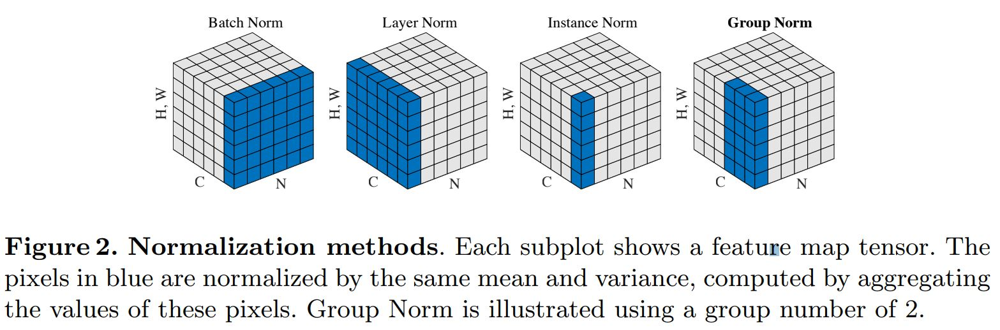

3. Batch Normalization¶
\[\begin{split}\hat{x}^{(k)} &=&\ \frac{x^{(k)} - E[x^{(k)}]}{\sqrt{Var[x^{{(k)}}] + \epsilon}}, \\
y^{(k)} &=&\ \gamma^{(k)} \hat{x}^{(k)} + \beta^{(k)}.\end{split}\]
随着网络深度加深或者在训练过程中，神经元激活值的分布逐渐发生偏移或者变动，之所以训练收敛慢，一般是整体分布逐渐往激活函数函数的取值区间的上下限两端靠近（饱和）， 导致反向传播时低层神经网络的梯度消失。这是训练深层神经网络收敛越来越慢的本质原因。
BN 通过一定的规范化手段，把每层神经网络任意神经元的激活值的分布强行拉回到 均值为 0 方差为 1 的标准正态分布 ，其实就是把越来越偏的分布强制拉回比较标准的分布，这样使得激活值落在激活函数的线性区域（0 附近）。 这样避免了梯度消失，梯度变大意味着学习收敛速度快，能大大加快训练速度。
BN 一般用在全连接层或卷积层之后，激活函数之前。
3.1. 加速训练¶
- 增大学习率 。由于网络参数不断更新，导致各层输入的分布不断变化，导致往往需要使用较小的学习率，并精心设计参数初始化。使用BN进行归一化之后，各层输入的分布相同，因此可以使用更大的学习率更快地收敛，并降低网络对初始化的依赖。
- 移除 dropout 。进行 BN 之后，各样本的 feature map 已经融合了一个 batch 之中其他样本的特性（均值，方差），因此单一样本的影响变小，网络更好学习整体的规律，有效地减小了过拟合的可能性（ BN 提供了正则化的作用）。
- 减小 \(L_2\) 正则化损失的权重 。
- 加速学习率衰减 。
3.2. BN消除¶
如果在训练过程中，网络发现这种 normalization 是多余的，可以通过学习使得：
\[\begin{split}\gamma^{(k)} &=&\ \sqrt{Var[x^{{(k)}}]}, \\
\beta^{(k)} &=&\ E[x^{(k)}].\end{split}\]
从而消除 BN 的作用。
3.3. 训练与测试¶
训练¶
训练过程中，均值与方差是在每一个batch中分别计算得到的。
学习的参数为：
\[\begin{split}\gamma &=&\ [\gamma^{(1)}, \gamma^{(2)}, ..., \gamma^{(C)}], \\
\beta &=&\ [\beta^{(1)}, \beta^{(2)}, ..., \beta^{(C)}].\end{split}\]
其中 \(C\) 是通道数（channel）。
测试¶
测试（Inference）过程中的均值和方差不再是在每一个测试batch中计算得到，而是使用由训练集得到的全局统计量。因此，训练过程中需要记录每个batch的均值和方差。
测试时使用的全局统计量如下（省略维度上标）：
\[\begin{split}E[x] & \leftarrow &\ E_B[\mu_B], \\
Var[x] & \leftarrow &\ \frac{m}{m-1}E_B[\sigma_B^2].\end{split}\]
而实际实现过程中，一般使用指数加权平均（Exponentially Weighted Averges，也称“移动平均”）来获得全局统计量，即在训练过程中使用下式更新全局统计量：
\[\begin{split}mean &=&\ (1 - momentum) \times mean + momentum \times E_B[\mu_B],\\
std &=&\ (1 - momentum) \times std + momentum \times E_B[\sigma_B^2].\end{split}\]
3.4. 缺点¶
BN统计均值、方差与batch size有关，batch size太小会导致性能变差。而某些任务受内存限制，batch size难以设置很大，因此BN作用难以显现。 这时候出现了Group Normalization。
{kind=link}
3.5. 参考资料¶
- Batch Normalization
- Group Normalization
- 深入理解Batch Normalization批标准化
- Batch Normalization 学习笔记